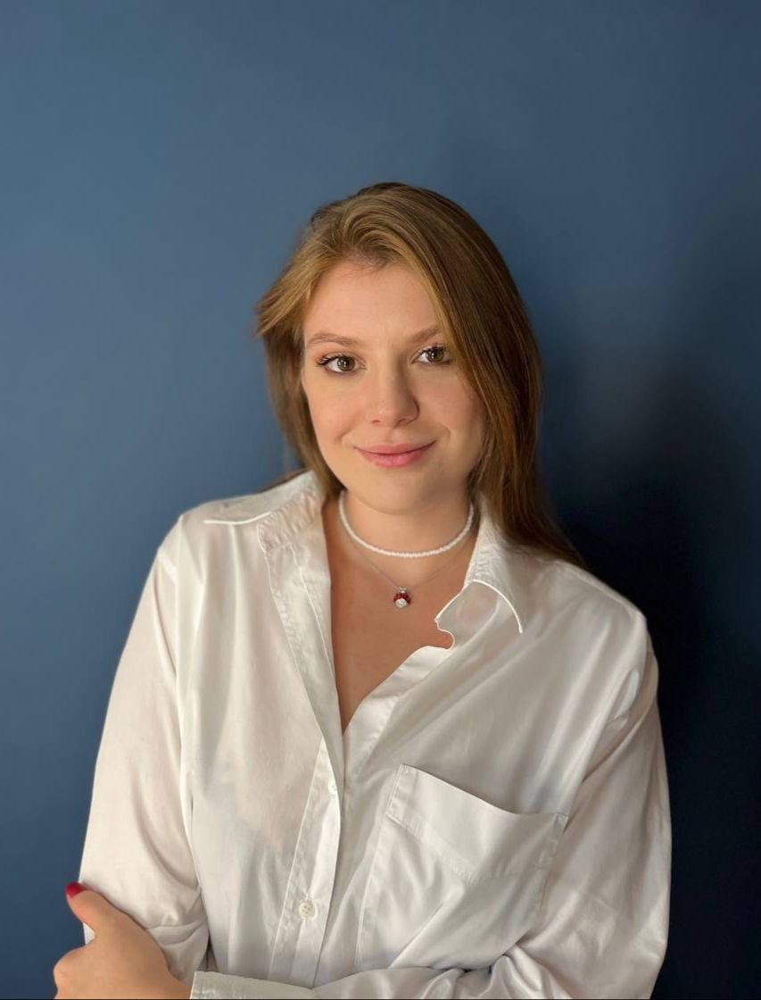

Иванова Мария Петровна
Терапевт высшей категории
Стаж работы: 15 лет
Специализируется на лечении заболеваний внутренних органов. Регулярно повышает квалификацию в ведущих медицинских учреждениях страны.
🚀 Страница сгенерирована автоматически Python-скриптом
В нашем медицинском центре работают врачи высшей категории, кандидаты и доктора медицинских наук с многолетним опытом работы.
Всего врачей: 6
Средний стаж: 17 лет
Терапевт высшей категории
Стаж работы: 15 лет
Специализируется на лечении заболеваний внутренних органов. Регулярно повышает квалификацию в ведущих медицинских учреждениях страны.
Хирург, кандидат медицинских наук
Стаж работы: 20 лет
Проводит операции любой сложности. Автор более 30 научных работ по современным хирургическим методикам.
Педиатр, врач высшей категории
Стаж работы: 12 лет
Специализируется на лечении детей всех возрастных групп. Постоянный участник международных педиатрических конференций.
Невролог, доктор медицинских наук
Стаж работы: 25 лет
Эксперт в области диагностики и лечения заболеваний нервной системы. Разработал уникальные методики реабилитации.

Кардиолог, врач первой категории
Стаж работы: 10 лет
Специализируется на диагностике и лечении сердечно-сосудистых заболеваний. Владеет современными методами эхокардиографии.

Ортопед-травматолог
Стаж работы: 18 лет
Специалист по лечению заболеваний опорно-двигательного аппарата. Проводит артроскопические операции любой сложности.